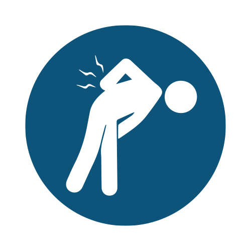
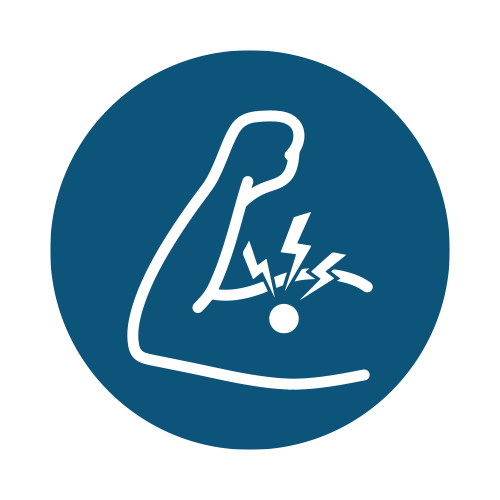
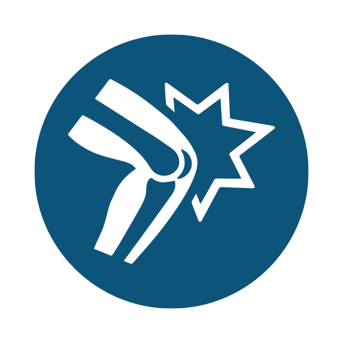
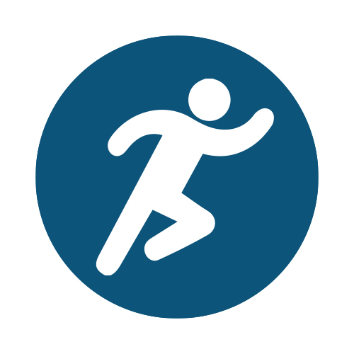
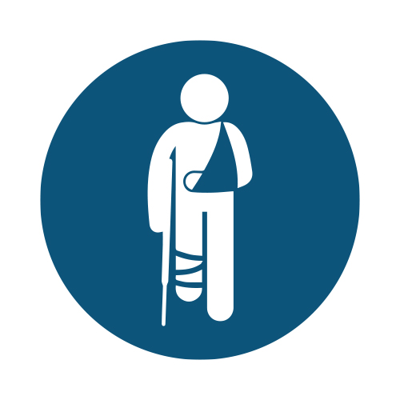
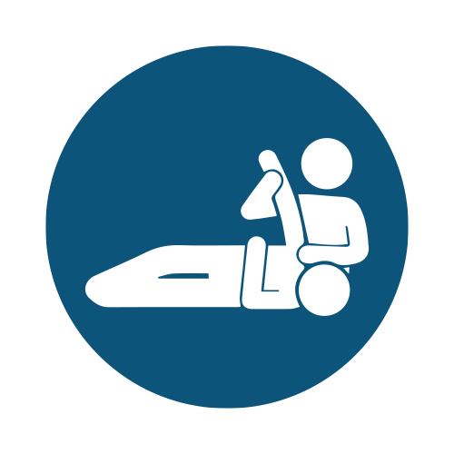

Sport
Corsa, palestra, sport di squadra e tutto ciò che vuoi continuare ad allenare e praticare.
Fisioterapista a Seriate · Dal 2010
Non basta stare meglio. Il percorso parte dal problema e guarda alle capacità che vuoi recuperare, nello sport, all'aperto, al lavoro o nella vita di ogni giorno.
Il metodo
Recuperare movimento non è necessariamente il punto di arrivo. Il lavoro ha senso quando ciò che recuperi diventa utile alla tua vita, al tuo lavoro o allo sport che pratichi.
Il problema e soprattutto cosa vuoi recuperare.
Movimento e una migliore gestione dei sintomi.
Forza, capacità e tolleranza al carico.
Portare ciò che hai recuperato alle richieste reali della tua vita, del lavoro o dello sport.
Per chi è
Il denominatore comune non è lo sport. È il valore che dai alla tua capacità di muoverti e fare le cose che per te contano.
Corsa, palestra, sport di squadra e tutto ciò che vuoi continuare ad allenare e praticare.
Arrampicata, ciclismo e MTB, trekking, sci e il movimento che ti porta fuori.
Lavorare, camminare, viaggiare, mantenere autonomia e continuare a fare le proprie cose nel tempo.
Aree in cui lavoro più spesso
Il punto di partenza può essere diverso per ogni persona. Il percorso viene costruito in base al problema, alle capacità di oggi e a ciò che serve per recuperarle.






Chi sono
Mi sono laureato in Scienze Motorie e Sport nel 2007 e in Fisioterapia nel 2010. In quegli anni praticavo judo a livello agonistico, qualificandomi per diversi campionati italiani; in seguito ho giocato a rugby. Il movimento e lo sport hanno fatto parte della mia crescita personale e hanno influenzato il mio modo di lavorare.
Oggi passo molto del mio tempo libero in montagna: a piedi, in MTB, arrampicando o sugli sci. Mi piace la fatica della salita, ma ancor più godermi la discesa e, possibilmente, una birra con gli amici a fine gita.
Nel corso degli anni ho lavorato con persone attive e sportive, tra cui arrampicatori, ciclisti e runner. Oggi alterno l'attività nel mio studio di Seriate alla collaborazione con PLAYS Health Training Club di Curno, una realtà con cui condivido una visione del movimento come parte centrale della salute e del percorso della persona.
Il confronto con medici e altri professionisti sanitari, insieme all'attività di formazione rivolta a fisioterapisti e professionisti del movimento, continua ad arricchire il mio lavoro.
Come lavoro
Il modo di lavorare parte dalla valutazione della persona e si adatta a ciò che serve per recuperare capacità e autonomia.
Osservo movimento, forza e capacità per capire cosa ti limita oggi e quali aspetti possiamo modificare.
La utilizzo quando può essere utile al percorso, come parte del lavoro e non come fine.
È una parte centrale del percorso per recuperare movimento, forza, capacità e autonomia.
Non utilizzo terapie fisiche o strumentali.
Cosa dicono i pazienti
Una selezione di testimonianze che raccontano un percorso, un recupero e ciò che la persona è riuscita a riprendere.
In pratica
Le immagini definitive verranno inserite con fotografie reali dello studio, del lavoro e del mondo outdoor di Alessandro.
Studio
Le visite si svolgono su appuntamento presso lo studio di Via G. B. Tiepolo 9 a Seriate.